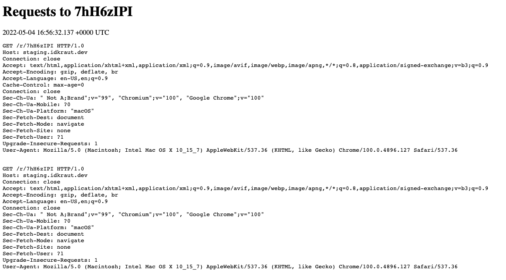
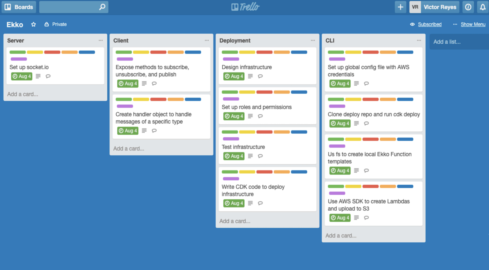

Projects

Rekwest Bin
A tool for receiving and debugging webhooks. Built using Go, Nginx, DigitalOcean Droplet, MongoDB, PM2, and ngrok.

Reaction
A trello-inspired Kanban board for project management. Built using React, Redux, Express, MongoDB, and Node.js.